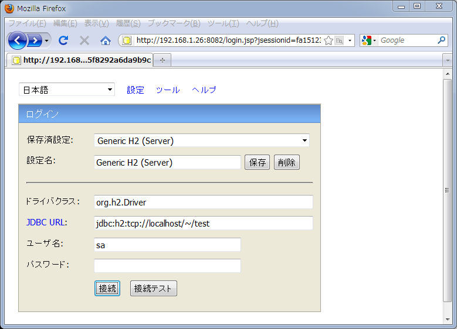
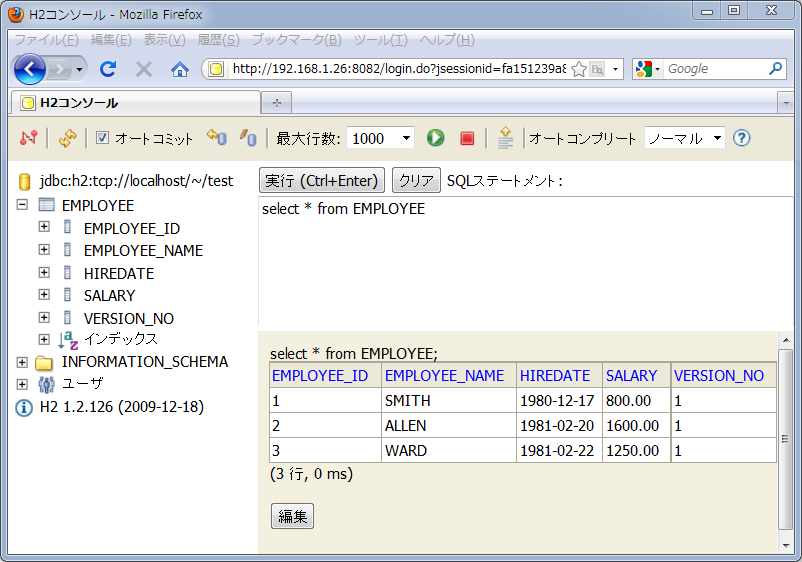
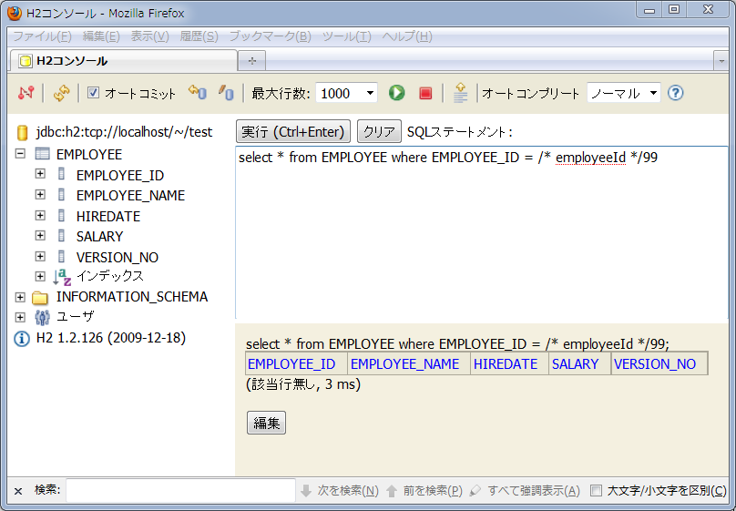

クイックスタート
あらかじめセットアップを完了させてください。
このクイックスタートでは、H2 Database Engine（以下H2）にサンプルテーブルとデータを用意し、取得と更新を行います。
DDL、データベースの接続情報、方言（Dialect）の実装を書き換えれば他のRDBMSでも動作します。 （現在、サポートしているデータベースは、DB2、H2 Database Engine、HSQLDB、Microsoft SQL Server 2008、MySQL、Oracle Database、PostgreSQL、SQLiteです。）
H2 Database Engineのダウンロード
H2は次のサイトからダウンロードできます。
以下、All Platformsのリンクで示されるzipファイルをダウンロードするものとして説明します。 zipファイルをダウンロードしたら解凍しbinディレクトリを開いてください。
JDBCドライバの設定
binディレクトリにあるjarファイルをEclipseなど開発環境のクラスパスに追加してください。
通常、クラスパスが通っていれば、JDBC 4.0 ドライバはサービスプロバイダメカニズムにより自動でロードされます。 詳細は、設定クラスのリファレンスを参照ください。
サンプルテーブルとデータの作成
binディレクトリにあるh2.batもしくはh2.shを実行してください。 ブラウザが立ち上がり、H2コンソールへのログイン画面が開きます。
保存済み設定を「Generic H2 (Server)」とし接続ボタンを押してください。 H2コンソールが開いたら、H2コンソールに以下のSQLを入力してください
create table EMPLOYEE ( EMPLOYEE_ID integer not null primary key, EMPLOYEE_NAME varchar(20), HIREDATE date, SALARY numeric(7,2), VERSION_NO integer ); insert into EMPLOYEE values(1, 'SMITH', '1980-12-17', 800, 1); insert into EMPLOYEE values(2, 'ALLEN', '1981-02-20', 1600, 1); insert into EMPLOYEE values(3, 'WARD', '1981-02-22', 1250, 1);
実行ボタンを押すと、H2のデータベースにテーブルとデータが作成されます。 作成されたことを確認するために、次のSQLを実行してください。
select * from EMPLOYEE
データが存在することを確認できます。
以上でサンプルテーブルとデータの作成は終わりです。
エンティティクラスの作成
テーブルにマッピングするエンティティクラスを作成します。 エンティティであることを示すために@Entityを注釈します。 @Entityのnaming要素には、テーブルやカラムの名前とエンティティクラスやプロパティの名前をマッピングするための規約を指定します。 ここで使用するNamingType.SNAKE_UPPER_CASEは、employeeIdというプロパティ名をEMPLOYEE_IDと対応づけます。
主キーには@Id、楽観的排他制御で使用するバージョン番号には@Versionを注釈します。
プロパティのフィールドは、publicにします。
package quickstart;
import java.math.BigDecimal;
import java.sql.Date;
import org.seasar.doma.Entity;
import org.seasar.doma.Id;
import org.seasar.doma.Version;
import org.seasar.doma.jdbc.entity.NamingType;
@Entity(naming = NamingType.SNAKE_UPPER_CASE)
public class Employee {
@Id
public Integer employeeId;
public String employeeName;
public Date hiredate;
public BigDecimal salary;
@Version
public Integer versionNo;
}
エンティティクラスを作成すると、メタ情報を表すクラス（この場合、_Employee）が「.apt_generated」ディレクトリに生成されます。 「.apt_generated」はデフォルトではPackage Explorerビューに表示されないので注意してください。 詳細は、よくある質問のページを参照してください。
設定クラスの作成
データベースアクセスに関する設定情報を提供するクラスを作成します。 ここでは、H2のデータソースと方言を利用することを示します。
DomaAbstractConfig を継承して作成できます。
package quickstart;
import javax.sql.DataSource;
import org.seasar.doma.jdbc.DomaAbstractConfig;
import org.seasar.doma.jdbc.SimpleDataSource;
import org.seasar.doma.jdbc.dialect.Dialect;
import org.seasar.doma.jdbc.dialect.H2Dialect;
import org.seasar.doma.jdbc.tx.LocalTransaction;
import org.seasar.doma.jdbc.tx.LocalTransactionalDataSource;
public class AppConfig extends DomaAbstractConfig {
protected static final LocalTransactionalDataSource dataSource = createDataSource();
protected static final Dialect dialect = new H2Dialect();
@Override
public DataSource getDataSource() {
return dataSource;
}
@Override
public Dialect getDialect() {
return dialect;
}
protected static LocalTransactionalDataSource createDataSource() {
SimpleDataSource dataSource = new SimpleDataSource();
dataSource.setUrl("jdbc:h2:tcp://localhost/~/test");
dataSource.setUser("sa");
return new LocalTransactionalDataSource(dataSource);
}
public static LocalTransaction getLocalTransaction() {
return dataSource.getLocalTransaction(defaultJdbcLogger);
}
}
Daoインタフェースの作成
データアクセスを行うためのData Access Object（Dao）インタフェースを作成します。 Daoであることを示すために@Daoを注釈します。 @Daoのconfig要素には、先ほど作成したAppConfigクラスを指定します。
検索のメソッドには@Select、更新のメソッドには@Updateを注釈します。
package quickstart;
import org.seasar.doma.Dao;
import org.seasar.doma.Select;
import org.seasar.doma.Update;
@Dao(config = AppConfig.class)
public interface EmployeeDao {
@Select
Employee selectById(Integer employeeId);
@Update
int update(Employee employee);
}
selectByIdメソッドに、対応するSQLファイルが存在しないことを示すエラーが表示されることを確認します。
SQLファイルの作成
まずは、selectByIdメソッドに対応するSQLを考えます。 selectByIdメソッドで実行したいSQLは次のものです。
select * from EMPLOYEE where EMPLOYEE_ID = /* employeeId */99
SQLコメント/* employeeId */は、DaoメソッドのemployeeIdパラメータSQLにバインディングすることを示します。 その直後の数値である99はテスト用のデータです。 プログラムからSQLを発行する際には使用されません。
このSQLをH2コンソール上で実行しSQLの構文に誤りがないことを確認します。
EMPLOYEE_IDが99のデータは存在しないので結果は0件ですが、SQLの構文には誤りがないことが確認できました。
次に、上記のSQLを格納するSQLファイルを作成します。 SQLファイルのパスは「META-INF/quickstart/EmployeeDao/selectById.sql」にします。 このパスはクラスパスに通っていなければいけません。 Doma Toolsをインストールしていれば、 selectByIdメソッドを右クリックして開くメニューから「Doma」 - 「Jump to SQL File」と選択することで適切な場所にファイルを作成できます。 ファイルを作成したら、上記のSQLをファイルに記述します。
SQLファイルが完成したら、EmployeeDaoを再度ビルドしてください。
Doma Toolsを利用している場合は、SQLファイルの保存時に自動でビルドが行われます。
ビルドが行われるとSQLファイルの存在チェックが再度行われエラーが消えます。
また、ビルドが成功すると、インタフェースと同じパッケージにEmployeeDaoImplという実装クラスが自動生成されます。
データベースアクセスは、この実装クラスをインスタンス化しておこないます。
EmployeeDaoImplは「.apt_generated」ディレクトリに生成されます。 「.apt_generated」はデフォルトではPackage Explorerビューに表示されないので注意してください。 詳細は、よくある質問のページを参照してください。
起動クラスの作成
エンティティやDaoを利用してデータベースアクセスを行います。 次のクラスを作成してください。
package quickstart;
import java.math.BigDecimal;
import org.seasar.doma.jdbc.tx.LocalTransaction;
public class Main {
public static void main(String[] args) {
// トランザクションの取得
LocalTransaction tx = AppConfig.getLocalTransaction();
try {
// トランザクションの開始
tx.begin();
// aptで生成されたDaoの実装クラスを生成
EmployeeDao dao = new EmployeeDaoImpl();
// 主キーでエンティティを検索
Employee employee = dao.selectById(1);
// エンティティのプロパティを変更
employee.employeeName = "KING";
employee.salary = employee.salary.add(new BigDecimal(1000));
// エンティティを更新
dao.update(employee);
// トランザクションのコミット
tx.commit();
} finally {
// トランザクションのロールバック
tx.rollback();
}
}
}
ここでは、従業員テーブルから1件を主キーで検索し、従業員名を更新しています。